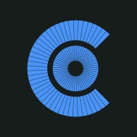

Education
CQUniversity
Top Skills
C#
Primary programming language used throughout professional career.
Deep knowledge and understanding of the patterns and conventions.
Memorised most of the syntax over years of continual use.
Enjoy staying up-to-date with new language and Common Language Runtime feature additions and changes.
Meta-programming expert.
JavaScript
Deep knowledge of the language.
Strong understanding of advanced concepts like async/await, currying, closures etc.
Appreciates that it allows and even encourages the use of higher-order functions.
SQL
Used for many years and can recall most of the syntax, for SQL Server.
Understanding of query performance optimisation techniques.
Understanding of Window Functions.
Azure DevOps
Proficient in composing .yaml files to define CI/CD pipelines.
Very familar with the landscape, have used for many years.
Sprint and retrospective management and creation.
Bash (Borne Again Shell)
Exposed initially on the job, then continued to learn in free time.
Use on a daily basis.
Automate repetitive tasks.
Scripts to generate code.
UNIX
Used daily for development and personally.
Can work effectively in MacOS, Ubuntu or (god forbid...) Windows
Work History
VALD
About
Founded from a world-first research collaboration in Brisbane, Australia, VALD was established in 2015 to bring lab-based technology to the field, so that it may be accessible to professionals around the world
Employment Details
Worked on HumanTrak API (Application Programing Interface)
Strong focus on testing and system design.
In team that focuses on quality and embraces the practice of Pair Programming.

Cavalry Consulting
About
Cavalry is a boutique management and technology consulting firm dedicated to enhancing business performance through a fusion of industry expertise and technological innovation. Their services encompass management consulting, technology consulting, software development, and application and data management.
Employment Details
Details of what I worked on and what I did.
Deswik
Deswik is a global technology leader that delivers integrated software solutions and specialized consulting for the mining and rail industries. With our world-class expertise and innovative solutions, we empower our customers to achieve success.
Details
Responsible for the upkeep and extenion of internal business systems.
Championed TDD as the approach to take for a highly successful business-critical project.
Further developed an appreciation for TDD.
Became very familiar with Ranorex and GUI (Graphical User Interface) testing.
Note-worthy Accomplishments
- Executed company-wide licensing model change (from perpetual to subscription based) - the project's success was considered world-class by senior Sandvik management
- Designed and developed xUnit Integration test framework
- Designed and developed Ranorex GUI (Graphical User Interface) test automation framework
SBC IT
"SBC is a leading provider of enterprise web solutions for workers compensation, case management, licensing, insurance, incident and hazard reporting, audit and risk management and OH&S" - SBC IT
Details
Details of what I did and what I worked on.
References
“Beau has been diligently working to make the GUI Automation framework ready for Nova. Despite facing frequent challenges, he remained consistent in his efforts. Now, we’re all seeing the results of his hard work — script writing has become easier, test development is more efficient, and pipeline jobs are running more reliably, focusing on real issues rather than flaky tests. Thank you for your dedication and excellent work!”
“Beau has been an excellent worker, team member, colleague, software developer, and all round great guy to have around. I really appreciated his strong worth ethic and go getter attitude.”
“Beau is a great asset. He is highly self-motivated and self-directed and possesses excellent technical skills.”
“A talented, passionate coder with a natural aptitude for development.”